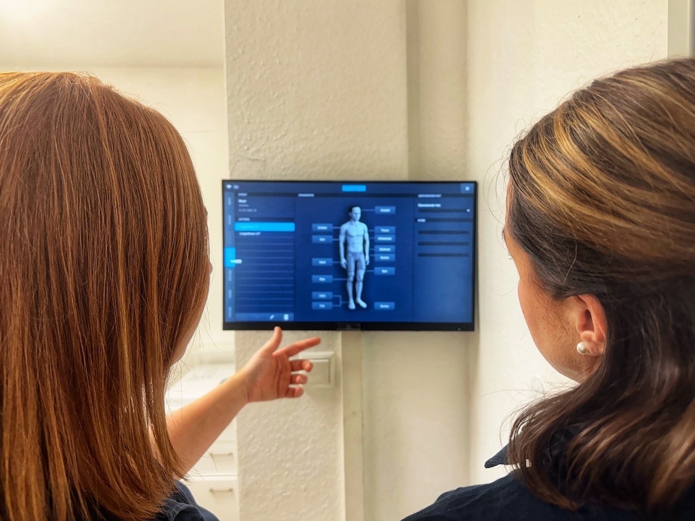

{{< shape "angles/angle-start">}}
Wir danken Ihnen herzlich für Ihr Verständnis!
Aktuell liegen wir mit den zu vergebenden Terminen circa ein Jahr im Voraus. In dringenden Fällen wenden Sie sich bitte mit einem Dringlichkeitscode Ihres Hausarztes an die Terminservicestelle der Kassenärztlichen Vereinigung unter der Telefonnummer 116 117.
In unserer Praxis behandeln wir gern Jugendliche ab dem Alter von 16 Jahren. Auf die Behandlung von jüngeren Kindern sind wir leider nicht eingestellt. Bitte fragen Sie Ihren behandelnden Kinderarzt nach einer passenden Praxis.